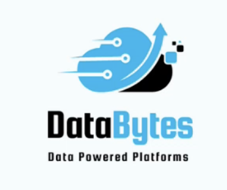

Aspiring Analyst Programmer | Data-Driven Problem Solver
I am a final-year Computer Science student at Deakin University, specializing in Data Science. With a strong foundation in statistical analysis, data manipulation, and visualization techniques, I thrive on transforming complex data into actionable insights. I have successfully led technology-driven projects across the healthcare and construction industries, driving operational improvements and optimizing processes. I'm passionate about using data to solve real-world problems and am committed to delivering impactful solutions in collaborative, high-performance teams. Outside of my technical work, you'll often find me dancing—letting the rhythm of life inspire my creativity.
Python, C#, SQL, Machine Learning, Data Visualization
REST APIs, MongoDB, FastAPI, Docker, Azure
